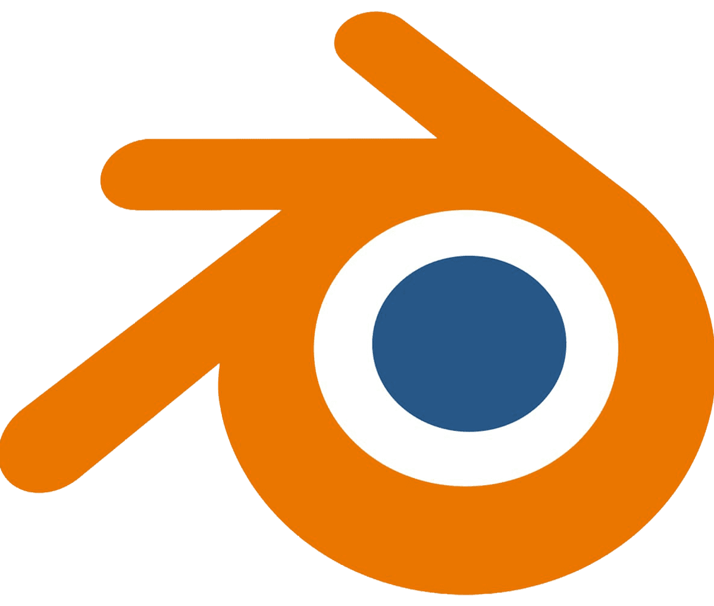

Space fast thing Xtreme 2 ultra est un jeu de
course en 3D dans lequel on contrôle un vaisseau spatial. Il est le projet dans lequel j'ai investi le
plus de temps, avec
trois semaines de travail à hauteur de plusieurs heures par jour. Le jeu peutêtre joué en solo ou en multi
local
et est jouable manette ou clavier. Aujourd'hui le jeu n'est pas fini. Parmis les 3 modes de jeu VS, CUP et
contre la montre, seuls le dernier est opérationnel. Le mode VS contient deja des IA capables de concourir
mais certains bugs empechent un fonctionnement stable du mode.
Le développement jeu m'a permis de travailler plusieurs nouveaux aspect de la création d'un jeu 3D. J'ai pu
notamment realiser plusieurs shader via le universal render pipeline de Unity. Deux de ces shaders m'ont
marqué et que j'espère réutiliser plus tard.
Le premiers shader est du CelShading, il prend le taux de luminosité de l'objet sur chaque point et renvoie
une couleur prédéfinie en fonction de cette luminosité. Le second lui, récupère les grand différences de
position sur la normal map et y place des pixels rouges.
Le jeu comporte aujourd'hui 4 courses différentes en circuit à tours multiples ou en sprint qui ont un
système qui recupère le meilleur chrono enregistré et le sauvegrade afin de mettre un record a battre.
Lors de la création du gameplay, j'ai voulu donner une forte impression de pilotage d'aviation, alors j'ai
créé le mouvement de façon à ce que pour tourner, il faille faire une rotation sur soi-même puis tirer le
vaisseau vers le haut ou le bas (Comme dans un avion).
Au début de son implémentation, l'ajout du multijoueur a posé plusieurs problèmes au niveau du code,
mais grace au nouveau input manager de Unity, j'ai pu ajouter le multijoueur sur clavier et manette, et
limitant chaque joueur a sa propre manette (sauf en solo ou le joueur peut interchanger entre les
manettes/claviers).
Bien que très simple, l'IA du jeu est fonctionnelle et est capable de parcourir la carte pratiquement
aussi rapidement qu'un joueur aguerri sans avoir recours a de la triche. Chaque IA tourne simplement vers le
prochain checkpoint en accélérant a fond et boostant aléatoirement une fois toutes les 5 à 12 secondes.
RÉSUMÉ DU PROJET :
OUTILS UTILISÉS
 Utilisation intensive de Unity
Utilisation intensive de Unity
 Conception logiciel et
programmation en accord
Conception logiciel et
programmation en accord -  Création de plusieurs modèles
afin de créer un environnement 3D
COMPÉTENCES ACQUISES / AMÉLIORÉES
- Management de projet (organisation de code, decision d'implementation, ...)
- Game design
- Niveau de programmation
- Direction artistique